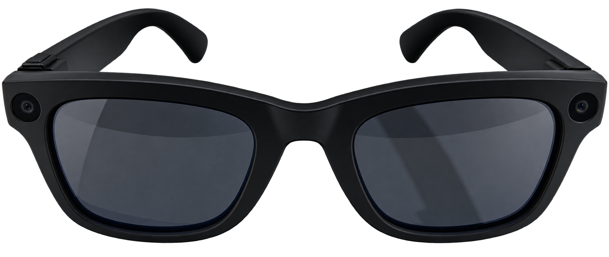
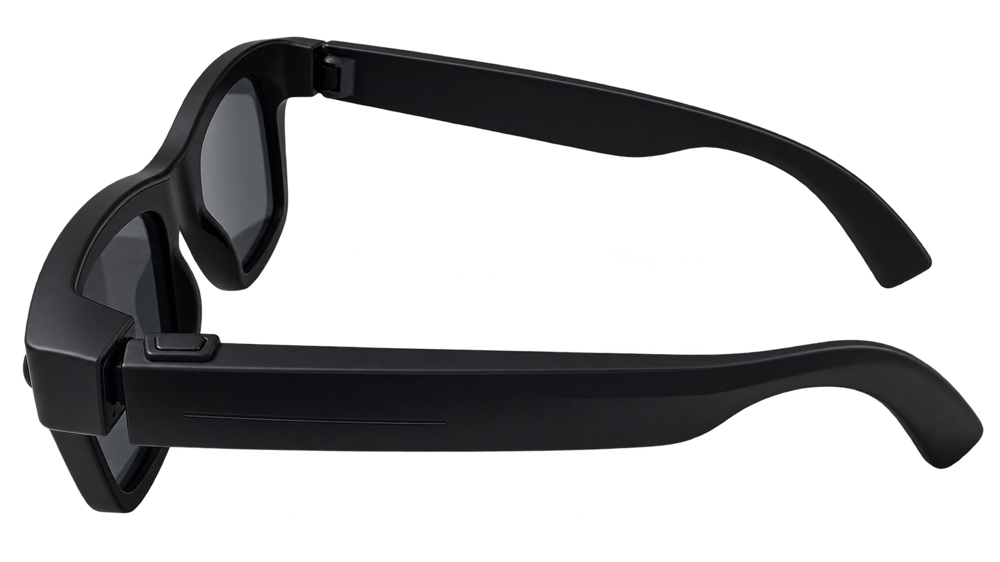
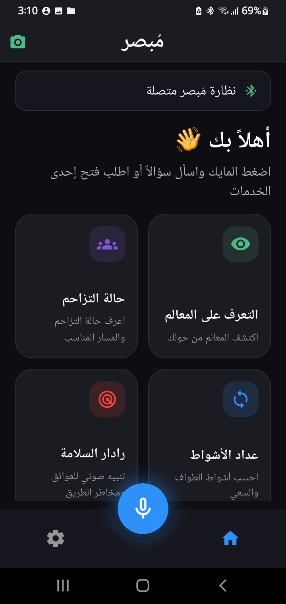
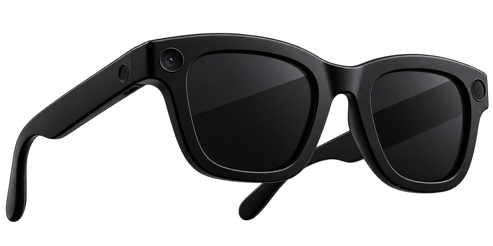

01
الاعتماد على مرافق
الاعتماد على شخص آخر للتنقل واتخاذ القرارات المكانية.
TECHNOLOGY WITH PURPOSE
مُبْصِر ليست مجرد نظارة ذكية؛ إنها منظومة متكاملة تجمع بين Smart Glasses و Dedicated App والذكاء الاصطناعي لمساعدة المكفوفين على التنقل وأداء المناسك باستقلالية وأمان.

فهم المحيط لحظياً
إرشاد صوتي استباقي
تحكم ومتابعة ذكية
تجربة أكثر أماناً
في بيئة الحج والعمرة، يواجه المكفوفون تحديات مرتبطة بالحركة والاتجاهات والعوائق المتغيرة وسط الحشود.
الاعتماد على شخص آخر للتنقل واتخاذ القرارات المكانية.
صعوبة تحديد الاتجاهات والموقع وسط الحشود المتحركة.
صعوبة إدراك العوائق والمسافات المتغيرة في الوقت المناسب.
فقدان الإحساس بالمكان والمسافة قد يزيد الضغط أثناء أداء المناسك.

مُبْصِر تجمع بين نظارة ذكية وتطبيق مخصص يعملان معاً كنظام واحد. تستشعر النظارة البيئة المحيطة، بينما يساهم التطبيق في إدارة البيانات والتنبيهات والإعدادات وتجربة المستخدم.
كاميرات وLiDAR ومستشعرات لفهم البيئة المحيطة.
مركز للتحكم والتخصيص والمتابعة وإدارة التنبيهات.
تحليل السياق وتقديم المساعدة في الوقت المناسب.
منظومة مترابطة تحول البيانات من البيئة المحيطة إلى معلومات ومساعدة قابلة للاستخدام.
LiDAR + Cameras
Real-time Processing
Decision Making
Control + Monitoring
Bone Conduction
اكتشاف العوائق والأشخاص والمسافات وتحليل البيئة المحيطة لحظياً.
يحلل الموقف ويقدم التنبيه والتوجيه المناسب قبل الحاجة إليه.
يساعد المستخدم على متابعة عدد الأشواط وتقديم التنبيهات المرتبطة بالمناسك.
تطبيق مخصص متصل بالنظارة لإدارة الإعدادات والتنبيهات والمتابعة.
تعليمات صوتية عبر التوصيل العظمي مع إبقاء الوعي بالأصوات المحيطة.
معالجة محلية للبيانات لتحقيق سرعة أكبر وتقليل الاعتماد على الإنترنت.
واجهة ذكية للإجابة عن الاستفسارات والإرشادات المتعلقة بالمناسك.
التطبيق المخصص ليس إضافة منفصلة؛ بل جزء أساسي من منظومة مُبْصِر. يتصل بالنظارة ليمنح المستخدم تجربة أكثر وضوحاً وتحكماً وتخصيصاً.
استقبال البيانات والحالة من الجهاز المتصل.
التحكم في التنبيهات والإعدادات حسب احتياج المستخدم.
عرض المعلومات المهمة وإتاحة المتابعة عند الحاجة.

يفهم السياق، يراقب المحيط، يحلل المخاطر ويتصرف استباقياً لمساعدة المستخدم في الوقت المناسب.
الهدف ليس استبدال الإنسان، بل تمكينه من الاعتماد على نفسه.
تجربة أكثر استقلالية
مساعدة ذكية في الوقت الحقيقي
تحكم وتخصيص ومتابعة
سرعة وخصوصية ومعالجة محلية
مُبْصِر في مرحلته الحالية نموذج أولي لمنظومة متكاملة تجمع بين النظارة الذكية والتطبيق المخصص والذكاء الاصطناعي، بهدف بناء تجربة أكثر أماناً واستقلالية للحجاج والمعتمرين المكفوفين.
